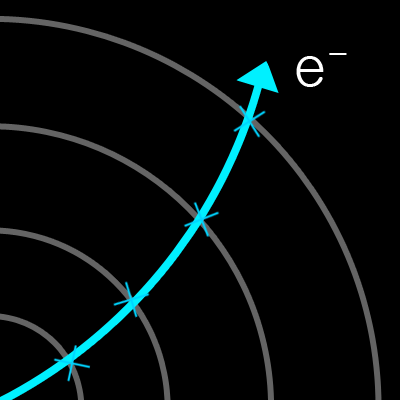
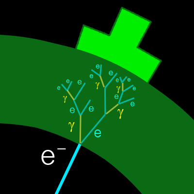
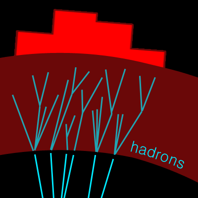
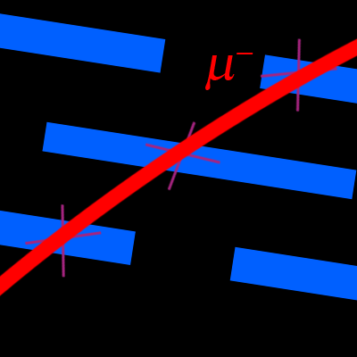

ATLAS detects particles using several layers of detectors, working in different ways.

The Inner Detector sees charged particles such as electrons or charged pions. Each particle leaves a series of hits in the detector which are then reconstructed as tracks.
The Inner Detector is enclosed within a solenoid magnet, meaning that as the charged particles travel through ATLAS, they are bent depending on their momentum.
In Collider, charged particle tracks are shown as blue lines in the centre.

The Electromagnetic Calorimeter allows ATLAS to measure the energy of electromagnetically interacting particles. Any charged particles, and also uncharged photons, will deposit energy in this detector.
In Collider, energy left in this calorimeter is shown as a green box. The size of the box represents the amount of energy. Generally, high energy electrons or photons will produce a very large energy deposit.

The Hadronic Calorimeter lets ATLAS measure the energy of hadrons, such as protons, neutrons and pions. Often hadrons are produced in jets, leaving many tracks, and leaving energy in both the electromagnetic and hadronic calorimeters.
In Collider, energy left by strongly interacting particles is represented by a red box, with the size of the box representing the amount of energy.

The Muon Spectrometer is the outermost layer of ATLAS. All other particles are stopped by the calorimeters, but muons pass through and leave tracks in the dedicated Muon Spectrometer. The muons leave a series of hits in the detector, which are then reconstructed as tracks by joining the hits.
There is a magnetic field in the Muon Spectrometer, which bends the muon tracks, allowing us to work out the muons' momenta.
In Collider, muon tracks are shown as red lines which pass right out throough the detector.